How to resize globe’s elements
How to change colors of globe’s elements
How to change speed of the animation
How to hide elements in Edge Animate or in SVG code
Fallback poster image for legacy browsers
Description
- Edge Animate projects
- Resolution independent scalable vector graphics (all elements are SVG files)
- Small size of vector graphics (26 KB size on average, for uncompressed SVG)
- 33 presets of the globe (included in individual folders)
- Each preset has two versions:
- globes with five continents (without Antarctica)
- globes with six continents
- Easy to customize colors, opacity of elements (with or without Edge Animate software), or just remove them
- Easy to change speed of animation
- Included:
- Edge Animate files (.an, JS, HTML, SVG)
- Edge Animate templates (.antmpl)
- Documentation
- PSD helper
Main graphic elements
All graphics are SVG vector files, located in images folder.
In Edge Animate they reside in the “globe” and “continents-animation” symbols:
reflections and reflections-2nd (both use the same reflections.svg file)

inner-shadow (inner-shadow.svg file)
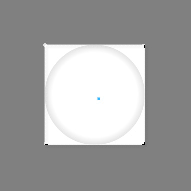continents (worldmap-flat-5-continents.svg for projects without Antarctica and worldmap-flat.svg - with all six continents)
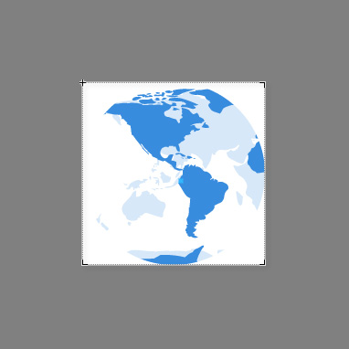outer-shadow (outer-shadow.svg file)
sphere (sphere.svg file)
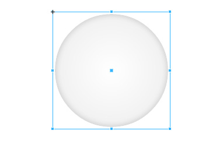In Edge Animate project you can modify position of the globe, add additional graphics, modify opacity, display property (on/off) of the elements. Or move the globe to another Edge Animate project. If you want to change colors of the elements, open respective SVG file in your favorite code editor. Instructions for that below.
Additional graphic elements
Some globe.an project files use additional SVG graphics:
stroke.svg(in projects 16, 17, 18, 19, 20, 32, 33)long-shadow.svg(in projects 19, 20, 32, 33)shine.svg(in project 14)
In addition some files contain duplicated SVG elements to simulate shadow effect - worldmap-flat-5-continents.svg (globe 27, 28 and 31) and sphere.svg (globe 28).
Continents with Antarctica
Edge Animate projects located in folder 2.six-continents are altered to show animation with six continents including Antarctica.
How to resize globe’s elements
Global resizing
If you want to resize the globe with all the elements altogether, do it in Edge Animate:
- Open
globe.an - On main Stage click on “globe” element to select it
- In Properties panel on the left there's “Position and Size” section located
- There you can edit
width,height,XandYposition
Fine-tuning individual elements
You might face situations when you just want to alter individual elements’ dimensions, so fine-tuning of SVG elements’ is needed.
<circle> Used in inner-shadow.svg, sphere.svg and stroke.svg

r: circle radius (and width at the same time). For example:99.5cx,cy: X, Y position of circle’s center. For example:50%stroke-width: in pixels (used instroke.svg)
<ellipse> Used in outer-shadow.svg
The ellipse is centered in cx, cy like the circle. But the radius in the x and y directions are specified by two attributes, not one: The rx and ry attributes. As you can see, the rx attribute has a higher value than the ry attribute, making the ellipse wider than it is tall. Setting the rx and ry attributes the same number would result in a regular circle.
<path> Used in reflections.svg

The translate() function moves a shape. You pass the x and y value to the translate() function inside the parameters.
The scale() function scales a shape up or down in size. The scale() function scales both the shapes dimensions and its position coordinates. Use scale() with combination with translate().
Note: Reflections of globe 04.green are scaled down a little and positioned closer to the center.
How to change colors of globe’s elements
Colors can be easily modified by editing respective SVG file in your favorite code editor.
You can safely edit any SVG file from folder images:
inner-shadow.svgouter-shadow.svgreflections.svgsphere.svgworldmap-flat-5-continents.svg
worldmap-flat-5-continents.svg*
worldmap-flat-5-continents.svg named files contain five continents (used in projects located in folder 1.five-continents). Same SVG is used in Edge Animate for Front (“flatmap-front” element) and Back (“flatmap-back” element) continents’ animation.
* Files used in projects from folder 2.six-continents are named worldmap-flat.svg and contain all six continents (Antarctica included).
Continents might be filled with solid color or linear gradient.
Front continents colors/gradients are defined with CSS class fr inside <style> element
Back continents colors/gradients are defined with CSS class bck inside <style> element
Solid color example
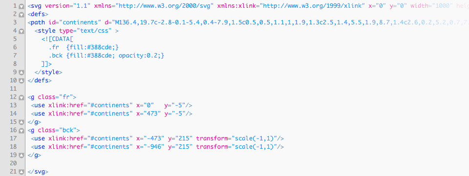fill- Fill color can be a hexadecimal RGB value, a regular RGB value, or one of the pre-defined color keywords.
opacity- Any number in the range
0.0to1.0. - (
0- fully transparent /1- fully opaque / a number between0and1- the element will be translucent (with background visible).
Linear gradient example
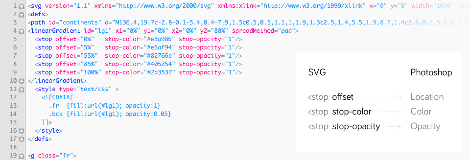The <linearGradient>-element has two nested <stop>-elements. The <linearGradient>-element controls the direction of the gradient and what happens before and after the gradient is applied (the spreadMethod attribute). The <stop>-elements control the colors used in the gradient, how far into the shape the colors start and stop, plus the opacity of the gradient.
Here is a list of the <stop> element attributes:
offset- How far into the shape this color starts (if the first color of the gradient) or stops (if the last color of the gradient). Specified as percentages of the shape the gradient is applied to.
stop-color- The color of this stop-point. The color the gradient changes from / to.
stop-opacity- The opacity of the color of this stop-point. If opacity changes from one stop-point with 1 to another with opacity 0, then the color will gradually become more transparent.
<stop> element attributes' equivalents in Photoshop:
offset > Location
stop-color > Color
stop-opacity > Opacity
Note: in Photoshop opacity values are expressed as percentage, so you'll have to convert them when placing into SVG (divide by 100). For example, 50% in Photoshop will be 0.5 in SVG.
More on SVG Gradients: http://tutorials.jenkov.com/svg/svg-gradients.html
sphere.svg and inner-shadow.svg
Both are oval shapes. Could be filled with solid color, linear gradient or radial gradient.
Radial gradient example

The <radialGradient>-element has nested <stop>-elements. The <radialGradient>-element controls the direction of the gradient. The <stop>-elements control the colors used in the gradient, how far into the shape the colors start and stop, plus the opacity of the gradient.
The <stop> element attributes are the same as for <linearGradient>.
More on SVG Gradients: http://tutorials.jenkov.com/svg/svg-gradients.html
reflections.svg
There are 5 predefined reflections’ gradients in this file.
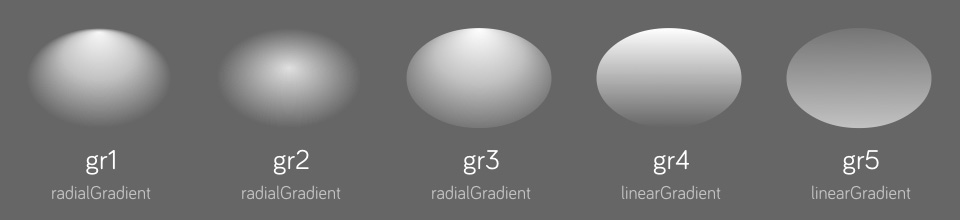By default the shape of reflections element uses gradient with ID named gr1. The other are gr2, gr3, gr4 and gr5.
If you want to select another one:
- Open
reflections.svgin code editor - Find the line with code
<path fill="url(#gr1)"...> - Change
gr1togr2,gr3,gr4orgr5. - Save the file.
Additionally you may alter gradient stops’ opacity, colors or create your own gradient.
globe.psd
For convenience purposes I've included PSD file with globe elements (on separate layers) you can play around. There you can tweak colors and gradients and see the results instantly. Then just transfer the color codes into respective SVG files.
- Open
globe.psd - Select element's layer (named
inner.shadow,continents.front,continents.backorsphere) - From Photoshop menu choose Layer > Layer Style > Blending Options > Gradient Overlay
- Click on "Gradient"
- Click on "Stops" (red boxed in picture below)
- Modify values, drag them to reposition
How to change speed of the animation
The loop of animation in all files is 4 seconds in time. However you may speed it up or slow it down.
- Open
globe.anwith Edge Animate - Open symbol
continents-animation - Be sure that 0:04 second in Timeline is visible
- Select 3 things: two last keyframes (“flatmap-front” and “flatmap-back” layers) and Action Trigger on top.
- Drag all three selected to the left if you want to speed up animation, otherwise - to the right.
- Save the file.
How to hide elements in Edge Animate or in SVG code
You may hide elements in Edge Animate file globe.an by changing Display property of element from On to Off.
But alternatively you may hide the elements by editing SVG code and bypass Edge Animate.
Hide Back continents
- Open SVG file
worldmap-flat.svg - In
<style>section find the line.bck {fill:*;}. It uses "bck" class to point to Back continents. - After
fillattribute add CSS codedisplay:none; - The final line might look like this:
.bck {fill:*; display:none;} - Save the file.
Hide Sphere
- Open SVG file
sphere.svg - Find the line that begins with
<circle... - Set
opacityvalue to0(zero). If there's missing opacity attribute addopacity="0"inside<circle>node. - Save the file.
Hide Outer shadow
- Open SVG file
outer-shadow.svg - Find the line that begins with
<ellipse... - Set
opacityvalue to0(zero). If there's missing opacity attribute addopacity="0"inside<ellipse>node. - Save the file.
Hide Reflections
- Open SVG file
reflections.svg - Find the line that begins with
<path... - Set
opacityvalue to0(zero). If there's missing opacity attribute addopacity="0"inside<path>node. - Save the file.
Same as display:none; works and opacity:0;
Masking of the continents
In Edge Animate continents-animation symbol contains CSS class continents. If you select the symbol in Edge, in Properties panel you'll notice that icon with “C” letter is lighter - this means it has CSS class name assigned.
Masking of the animated continents with perfect circle shape is done with border-radius: 50% CSS code in globe.html
33 Presets
1 2 3 4 5 6 7 8 9 10 11 12 13 14 15 16 17 18 19 20 21 22 23 24 25 26 27 28 29 30 31 32 33 with Antarctica
01.white-blue

02.blue-green

03.blue

04.green
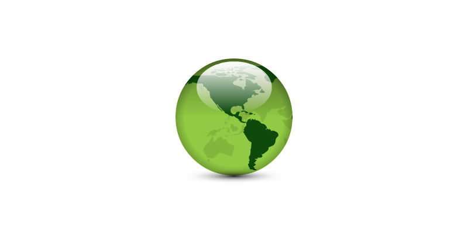05.blue-yellow
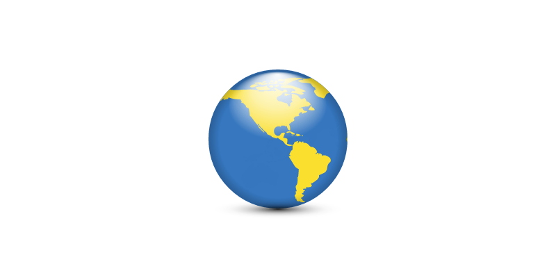06.lemonlight-orange

07.black-yellow

08.darkblue-yellow

09.grey

10.blue-white

11.flat
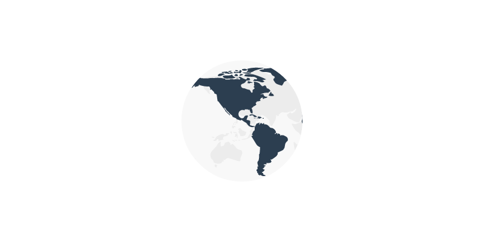12.stripes
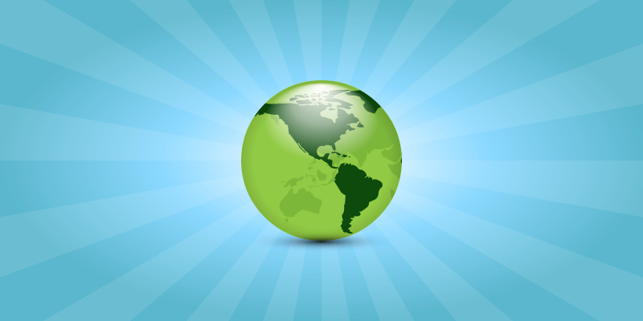13.red-white-flat
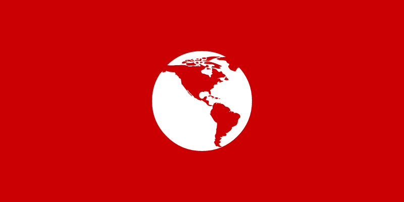14.galaxy-shine

15.blue-transparent
16.green-blue-stroke

17.blue-flat-stroke

18.pale-flat-stroke

19.yellow-blue-flat-long-shadow

20.blue-white-flat-long-shadow

21.blue-purple-gradient

22.blue-bronze-gradient

23.electric-green
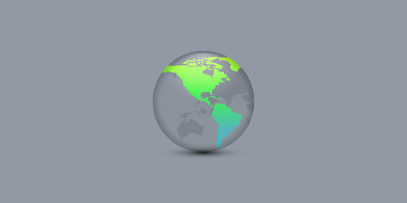24.darkblue-electric-green

25.yellow-black-foggy

26.white-bronze-gradient

27.white-blue-additional-shadows

28.blue-additional-shadows

29.flat-eco

30.gold

31.blue-inner-light
32.red-stroke-flat-long-shadow

33.red-cherry-flat-long-shadow

33 presets with Antarctica
There’s additional 33 presets (located in folder 2.six-continents) altered to show animation with six continents including Antarctica.
Preloader
Edge Animate project uses one of the Edge native preloaders. To edit or replace:
- Open project file
globe.an - From main Menu select View > Preloader Stage
- Click “Insert Preloader Clip-Art...” button on the left.
- Select from the list.
Fallback poster image for legacy browsers
When visitors view your content in a legacy (older) web browser, the poster image Poster.png is displayed. I've included poster images in every Edge Animate project (.an) in this package. To view it:
- Open project file
globe.an - Select from main Menu: View > Down-level Stage
Read more on that here: http://helpx.adobe.com/edge-animate/using/target-older-browsers.html
Publishing from Edge Animate
After you've done editing in Edge Animate, publish the project files:
- Choose Published Content. From main menu: File > Publish Settings... > Publish Target
- Web (optimized HTML)
- Animate Deployment Package (.oam) for Adobe Muse
- iBooks / OS X Dashboard Widget (.wdgt)
- Publish. From main menu: File > Publish
- Project files are published into
publishfolder
CDN Hosting
In this bundle projects published for web use Adobe Content Distribution Network (CDN) Hosting to speed up Animate composition delivery - JS files edge.*.*.*.min.js and jquery-*.*.*.min.js are loaded externally from public Adobe server.
Compositions using the Adobe CDN all share a single URL for jQuery and the Edge Runtime. The browser caches the runtime, so the user only downloads the library once no matter how may Animate compositions they view, even if compositions are on different sites and produced by different authors.
Don't use the CDN if your composition needs to run without an Internet connection or if you want to use your own hosting exclusively.
SVG files require proper web server MIME-type configuration
If SVG files don't show up on web, the server doesn't serve MIME types for SVG files correctly. You should configure server appropriately. There are several ways to do it, depending upon the server type, and your access to server settings.
For example, in Apache server it's done by editing .htaccess configuration file that is hidden - make sure your FTP client shows hidden files. If your server does not have such a file, create a file and name it “.htaccess”, and associate the SVG file extensions with the correct MIME Type; if the file already exists, you can simply add the correct entries to it. The particular line you should add are:
AddType image/svg+xml svg
The .htaccess file should be placed in the directory that contains the SVG file, or any parent directory.
More on this subject: http://www.w3.org/services/svg-server/
Notes
The original map is taken from the NASA website as a source.
The projects were produced using Adobe Edge Animate CC version 3.0.